Mundstart, tungens midterlinje og mobilkamera Før: main ved 1c7eb85. Efter: fejlrettelsen. Billedstillingerne er pauset for at kunne sammenlignes; spillets normale indflyvning og animationer fortsætter automatisk. Klik for fuld størrelse.
Rapport · Aktuelle browserkontroller · Førmålinger
Indgang · mobil Start og indgangsvalg: ansigtet ses udefra. Kun knapperne registrerer svaret.
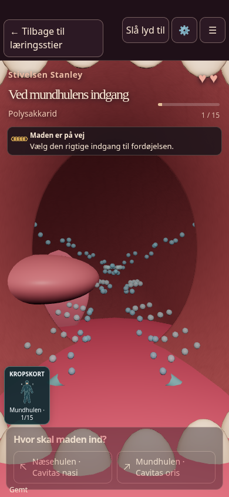
Før. Start og indgangsvalg: ansigtet ses udefra. Kun knapperne registrerer svaret. 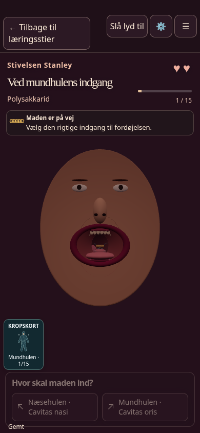
Efter. Start og indgangsvalg: ansigtet ses udefra. Kun knapperne registrerer svaret. Mund · mobil Tungens krop og bageste del følger samme midterlinje og hænger visuelt sammen. På mobil er mere af mundhulen synlig.
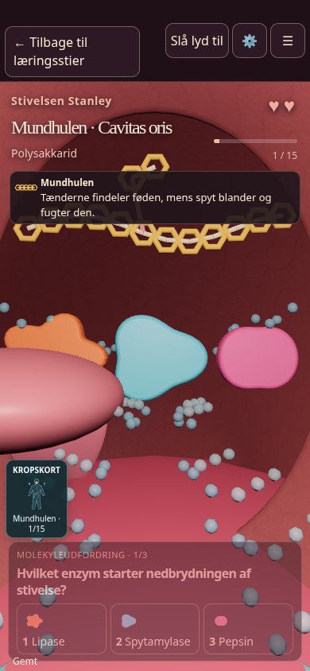
Før. Tungens krop og bageste del følger samme midterlinje og hænger visuelt sammen. På mobil er mere af mundhulen synlig. 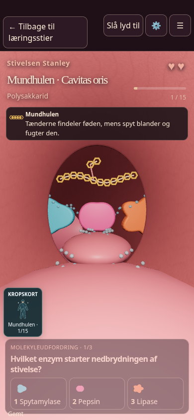
Efter. Tungens krop og bageste del følger samme midterlinje og hænger visuelt sammen. På mobil er mere af mundhulen synlig. Synkning · mobil Mobilens bredere synsfelt viser epiglottis og larynxindgang samlet. Kameraet følger samme sikre rute.
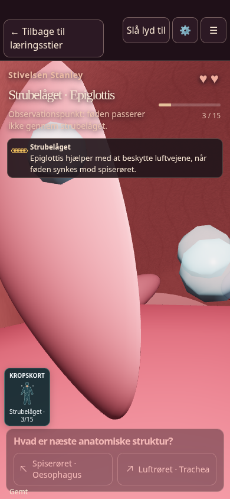
Før. Mobilens bredere synsfelt viser epiglottis og larynxindgang samlet. Kameraet følger samme sikre rute. 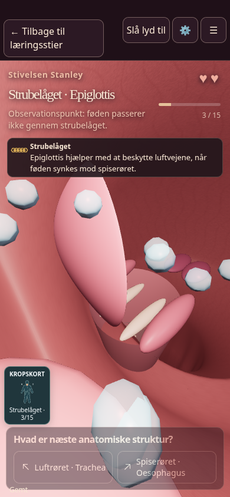
Efter. Mobilens bredere synsfelt viser epiglottis og larynxindgang samlet. Kameraet følger samme sikre rute. Jejunum · mobil Mere slimhinde og flere folder kan ses i samme mobilbillede. De 3.200 villi og deres bevægelse bevares.
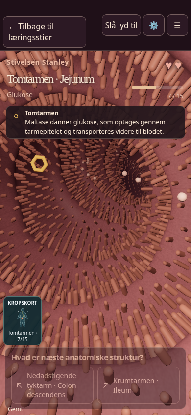
Før. Mere slimhinde og flere folder kan ses i samme mobilbillede. De 3.200 villi og deres bevægelse bevares. 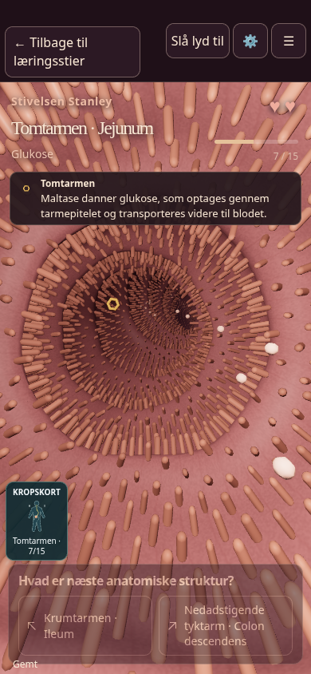
Efter. Mere slimhinde og flere folder kan ses i samme mobilbillede. De 3.200 villi og deres bevægelse bevares. Indgang · desktop Start og indgangsvalg: ansigtet ses udefra. Kun knapperne registrerer svaret.
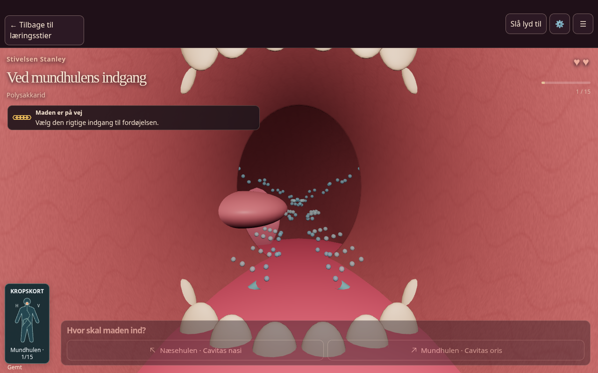
Før. Start og indgangsvalg: ansigtet ses udefra. Kun knapperne registrerer svaret. 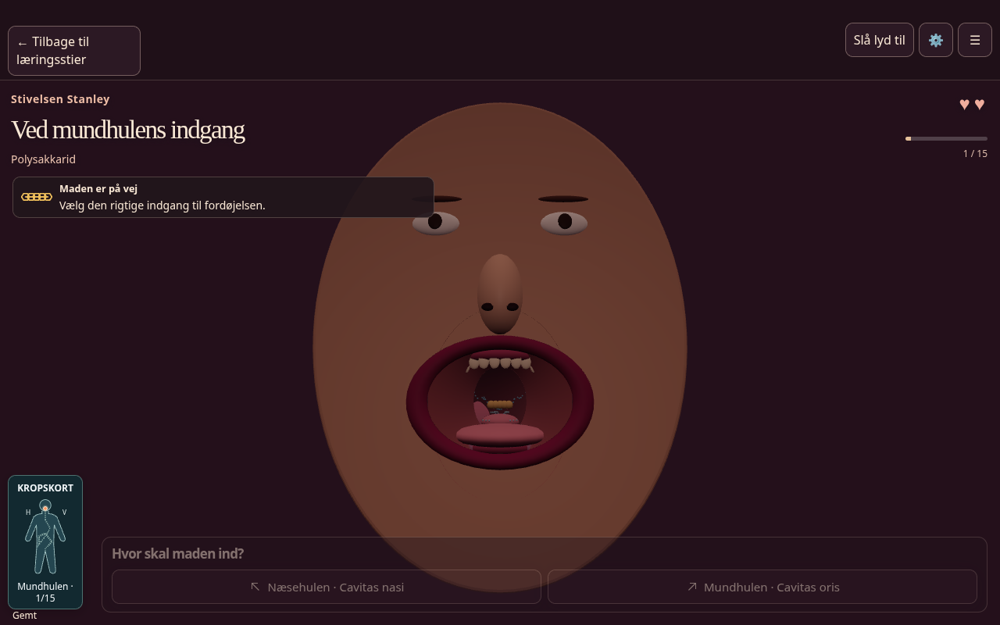
Efter. Start og indgangsvalg: ansigtet ses udefra. Kun knapperne registrerer svaret. Mund · desktop Tungens krop og bageste del følger samme midterlinje og hænger visuelt sammen. På mobil er mere af mundhulen synlig.
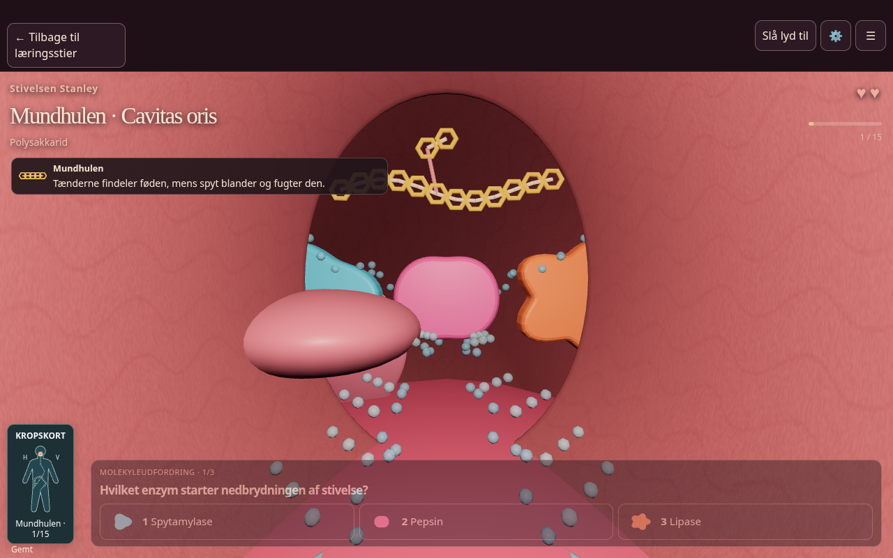
Før. Tungens krop og bageste del følger samme midterlinje og hænger visuelt sammen. På mobil er mere af mundhulen synlig. 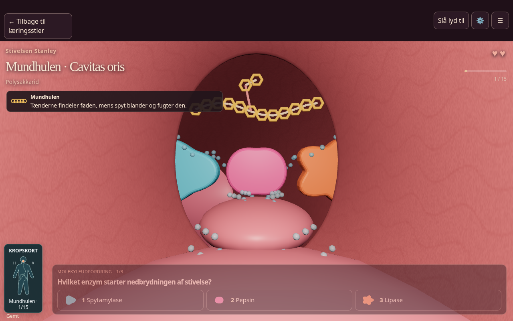
Efter. Tungens krop og bageste del følger samme midterlinje og hænger visuelt sammen. På mobil er mere af mundhulen synlig. Synkning · desktop Mobilens bredere synsfelt viser epiglottis og larynxindgang samlet. Kameraet følger samme sikre rute.
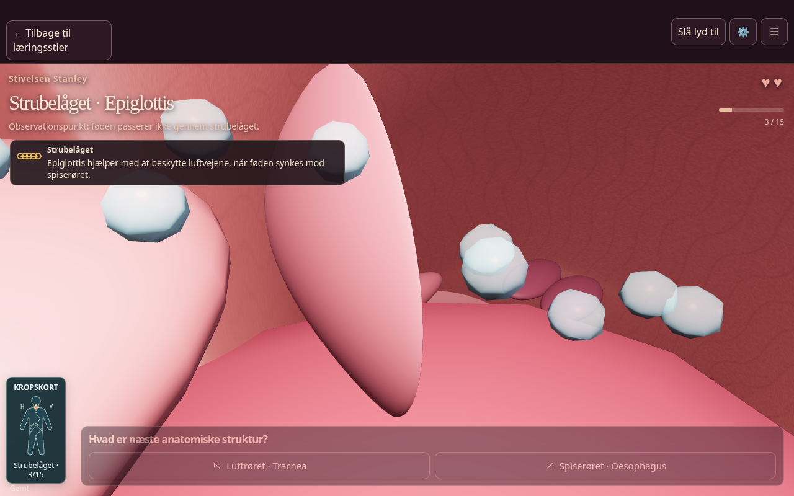
Før. Mobilens bredere synsfelt viser epiglottis og larynxindgang samlet. Kameraet følger samme sikre rute. 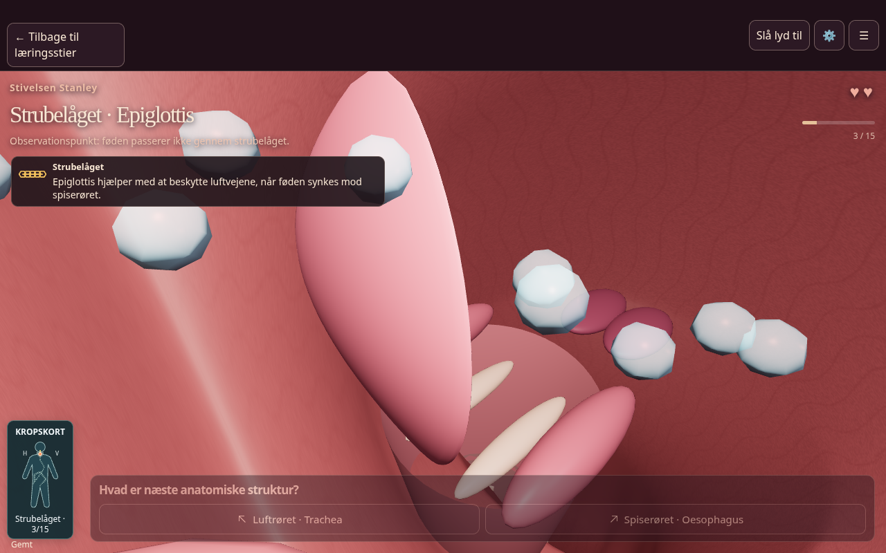
Efter. Mobilens bredere synsfelt viser epiglottis og larynxindgang samlet. Kameraet følger samme sikre rute. Jejunum · desktop Mere slimhinde og flere folder kan ses i samme mobilbillede. De 3.200 villi og deres bevægelse bevares.
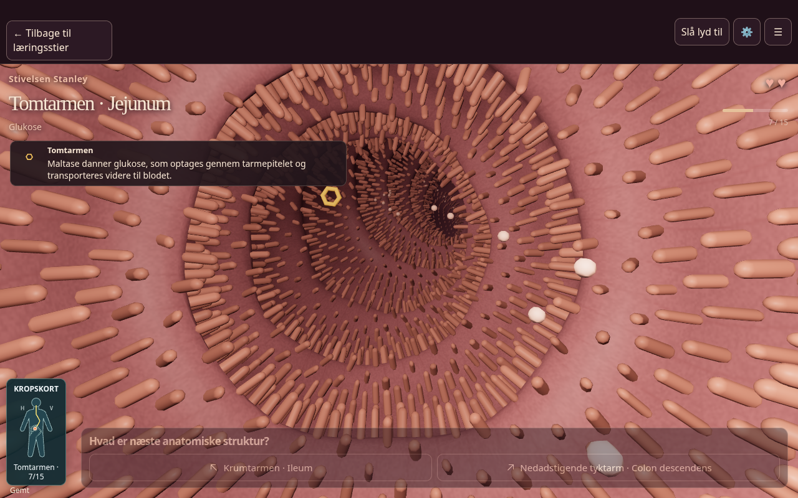
Før. Mere slimhinde og flere folder kan ses i samme mobilbillede. De 3.200 villi og deres bevægelse bevares. 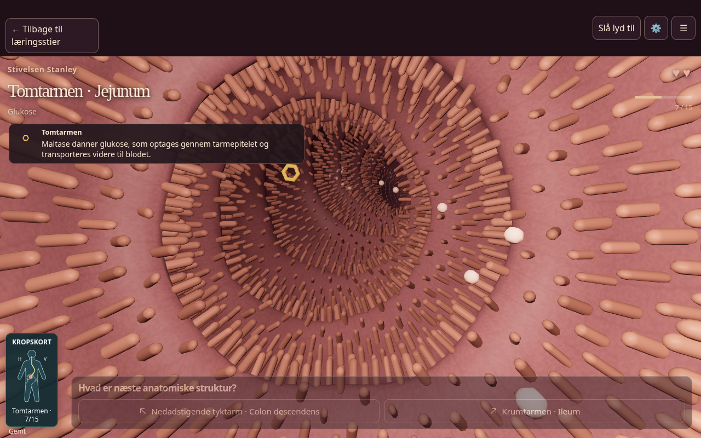
Efter. Mere slimhinde og flere folder kan ses i samme mobilbillede. De 3.200 villi og deres bevægelse bevares. Telefon med mindre browserhøjde og DPR 3 390 × 664 CSS-pixels, som giver plads til browserens egne værktøjslinjer. Dette er Chromium-emulering og ikke en fysisk Safari-test.
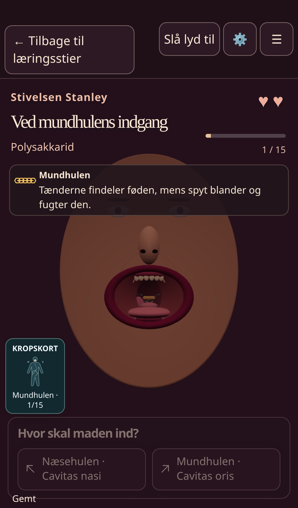
Start og indgangsvalg: ansigtet ses udefra. Kun knapperne registrerer svaret. 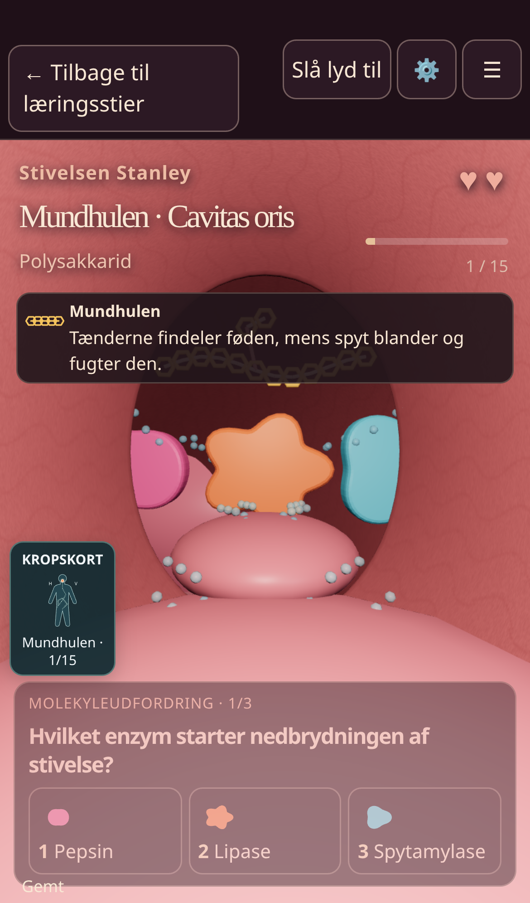
Tungens krop og bageste del følger samme midterlinje og hænger visuelt sammen. På mobil er mere af mundhulen synlig.